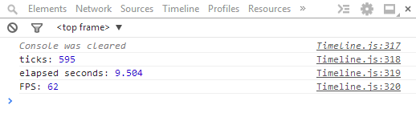

Looking for dogumentation? Click here.
Instantiation is like any other use of 'new'.
All arguments should be passed in wrapped in an object, like so:
Decides if requestAnimationFrame will be used. requestAnimationFrame polyfills to fallback onto window.setInterval().
See requestAnimationFrame polyfill.
Default is true.
If true, the clock mechanism inside of the timeline object will start upon instantiation.
Default is false.
Methods related to using the internal clock. Clock methods don't take parameters.
Starts the clock. start() is chainable.
Pauses the clock. Timed events won't fire, but events set with on() can still be triggered. pause() is chainable.
Completely resets the clock and all events, then starts the clock again. reset() is chainable.
Resumes the clock after being paused.
Returns the amount of time that the clock has been running in seconds. Not chainable.
Outputs the amount of internal ticks, elapsed seconds, and a rough estimation of the Frames per Second. If debug = true,.log() will be called every tick, so console.clear() is used to keep the console.clear().
To turn on the clock's logging per tick, use
Screenshot of console output:

Methods that interact with the event aggregator, trigger at specific timed events, or loop.
Used to create named triggerable events. See trigger() for triggering.
String eventName
The name to assign to event. Can be any string allowed as a javascript object property.
Function callback
The function to be called when the event is triggered.
Array args
The arguments that should be passed into the triggered function when called. Should be passed as an array:
[ arg1, arg2, arg3, ...]
Object scope
The context that the triggered function will be called in. defaults to the Timeline object.
Used to create events that trigger at specific clock times.
The 'clock time' refers to the internal clock kept by the Timeline object.
Integer elapsedTime
The name to assign to event. Can be any string allowed as a javascript object property.
Function callback
The function to be called when the clock reaches the elapsed clock time.
Array args
The arguments that should be passed into the triggered function when called. Should be passed as an array:
[ arg1, arg2, arg3, ...]
Object scope
The context that the triggered function will be called in. defaults to the Timeline object.
Used to create events that loop at specific clock intervals.
The 'clock time' refers to the internal clock kept by the Timeline object.
Unique String loopName
A Unique name to maintain the loop externally. Can be any string allowed as a javascript object property. It is recomended to not have matching on() and loop() event names. See remove() for more details.
Function callback
The function to be called when the clock reaches the elapsed clock time.
Object scope
The context that the triggered function will be called in. defaults to the Timeline object.
Array args
The arguments that should be passed into the triggered function when called. Should be passed as an array:
[ arg1, arg2, arg3, ...]
Object options
The options are passed in as an object.
The options consist of:
Integer options.start
The clock time that the loop should begin it's intervals. Defaults to the current clock time (Immediately).
Integer options.stop
The clock time that the loop should stop it's intervals. Defaults to Infinity.
Integer options.interval
The amount of clock time that the loop will have between it's intervals. Defaults to 9999.
Integer options.maxIntervals
A hard limit on the amount of times the loop may iterate. Defaults to Infinity.
Integer options.duration
The duration of the loop's callback. Defaults to 0. Increases the time between intervals, rather than taking the duration out of the interval times.
Triggers a function after a specific amount of seconds from when after() is called. after() is a shorthand for what is a probable usage.
All the parameters of after() are the same as at(), except that after() add the seconds passed in to the current clock time and triggers it then.
Removes events set by on(), at(), and loop().
Where event is an eventName set by on(),
or
where event is a time (in seconds) that an event was set to trigger with at(),
or
where event is the unique name of a loop (added using loop() method)
It is recomended to not have matching event names with on() and loop(). If this advice is disregarded, note that it will first remove the event set by on() before the looping event. If you feel the need to have matching names, consider a naming scheme such as loops being suffixed with the '-loop'. Example: 'render-loop'.
Waits for the current stack to clear before calling a function. Uses window.setTimeout()..
Function callback
The function to be deferred.
These events are automatically triggered, but can alse be triggered using the trigger() method.